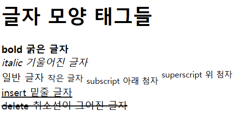

이번 장에서는 글자 태그에 속하는 글자 모양 태그에 대해 알아본다.
글자 모양 태그에는 b, i, small, sub, sup, ins, del 이 있다.
예시로 바로 살펴보자.
<!--글자 모양 태그들-->
<!DOCTYPE html>
<html>
<head>
<title>글자 모양 태그</title>
</head>
<body>
<h1>글자 모양 태그들</h1>
<p>
<b>bold 굵은 글자</b>
<br>
<i>italic 기울어진 글자</i>
<br>
일반 글자 <small>작은 글자</small>
<sub>subscript 아래 첨자</sub>
<sup>superscript 위 첨자</sup>
<br>
<ins>insert 밑줄 글자</ins>
<br>
<del>delete 취소선이 그어진 글자</del>
</p>
</body>
</html>

b는 굵은 글자
i는 기울어진 글자
small은 작은 글자
sub은 아래 첨자
sup은 위 첨자
ins는 밑줄 글자
del은 취소선이 그어진 글자를 만든다.